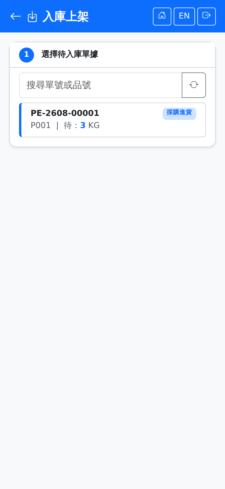

入庫上架Putaway
從倉儲作業首頁進入。畫面是兩個步驟：先選一張待入庫的單據，再指定目的儲位與數量。來源單據由桌機開立（進貨單、其他進貨、借入、客供、銷退等），手機只負責實際上架動作。Opened from the warehouse operations home page. The screen has two steps: pick an inbound document, then give the target location and the quantity. The documents themselves are raised on the desktop (goods receipts, other inbound, borrowing, customer-supplied stock, sales returns and so on); the phone only does the physical put-away.

步驟一：選擇待入庫單據Step 1: choose the document
清單列出所有待入庫的單據行，每行顯示單號、品號與待上架數量。可用上方查詢列輸入單號或品號縮小範圍。清單空白代表目前沒有待入庫的單據。The list shows every inbound document line, with the document number, the product and the quantity still to put away. Narrow it with the search bar at the top. An empty list means there is nothing waiting to be put away.
需 IQC 檢驗的品號要先通過進料檢驗才會出現在這裡。Products that need incoming inspection appear here only once IQC has passed.
步驟二：確認上架Step 2: confirm the put-away
斷線時When the connection drops
待上架清單需要連線才載得出來。送出時若剛好斷線，會提示「連不上伺服器，已暫存在手機，恢復連線後自動送出」。詳見斷線保護。The put-away list needs a connection to load. If the connection drops just as you submit, the screen shows "Server unreachable — saved on the phone and sent automatically when the connection returns". See Disconnection protection.
上架完成後，單據的過帳與帳務由系統處理，與桌機的「倉庫作業」畫面同一套流程。Once the put-away is done, the system handles posting and accounting through the same flow as the Warehouse Operations screen on the desktop.